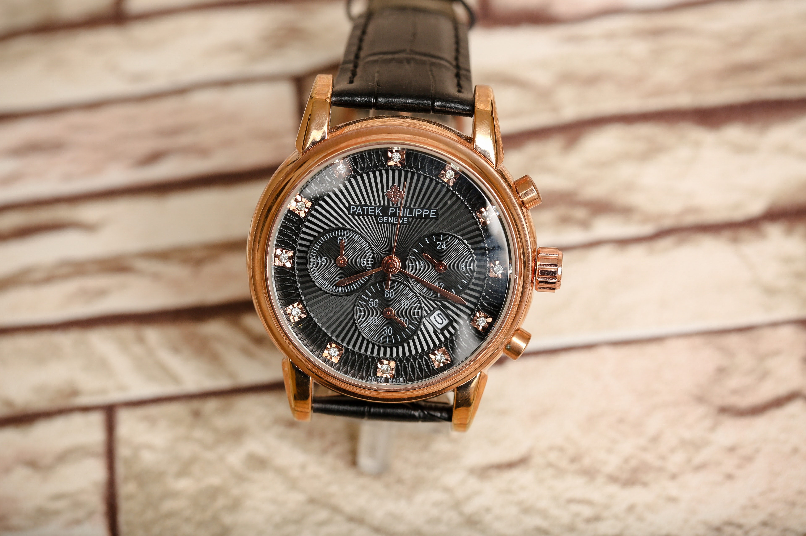

Founded in 1875 by Jules Louis Audemars and Edward Auguste Piguet in Switzerland.
Their most popular model is the Royal Oak, which was first released in 1972 to combat the Quartz Crisis taking over.
More information on the Quartz Crisis in the Mechanics Page.
The brand collection has prices that range from $25,000 to $900,000

Patek Phillipe Rose Gold Complications
Patek Phillipe
Founded in 1839 by Antoni Patek and Adrien Phillipe in Geneva, Switzerland.
Their most popular model is the Nautilus, which was first released in 1976 to combat the Quartz Crisis taking over.
More information on the Quartz Crisis in the Mechanics Page.
The brand collection has prices that range from $18,000 to $33,884,798
Rolex Submariner Deep Sea
Rolex
Founded in 1905 by Hans Wilsdorf in London, United Kingdom.
Their most popular model is the Submariner, which was first released in 1953 for divers,
who were looking for watches that were corrosion resistant. This watch is also the first
to ever reach a depth of 100 meters, groundbreaking at the time.
The brand collection has prices that range from $25,000 to $17,800,000